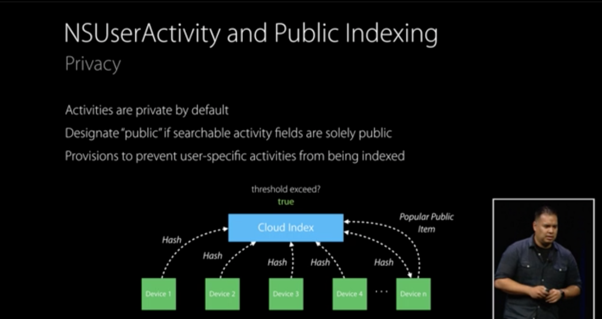
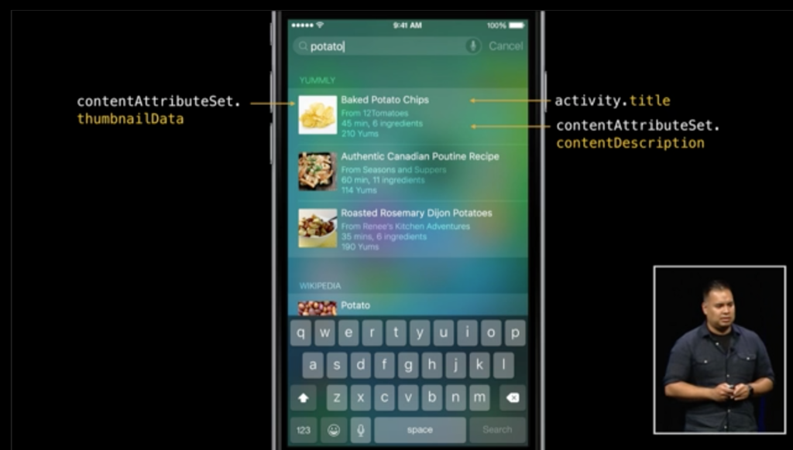

Netcom Developer's Backing #6のまとめ
9/18（金）にNetcom Developer’s Backing #6を行いました。
iOS9の新機能について
Search APIsについて
以下の3つの要素で構成されている。
- NSUserActivity
- CoreSpotlight
- Web Markup
iOS側での対応
NSUserActivity（ユーザ端末内/他の端末にも）
- ユーザーがアプリ内で閲覧したコンテンツをindexして、SpotlightやSafariの検索バーから検索することができるようにする機能
デバイス内だけでなく、アプリをインストールしていないユーザーのSpotlightやSafariの検索バーにも、コンテンツを表示することができる（インストールされている複数端末から検索、表示される数が多い場合らしいが表示される条件の詳細は不明）
実装
// NSUserActivity var activity:NSUserActivity = NSUserActivity(activityType: “com.yummly.browseRecipe“) activity.title = "Baked Potato Chips" activity.keywords = Set<String>(arrayLiteral: "dog", "cat", "pig", "sheep") activity.userInfo = ["id": "http://www.yummly.com/recipe/BPC-983195"] activity.eligibleForSearch = true activity.becomeCurrent()Spotlightでタップ
appDelegateでapplication:continueUserActivity:restorationHandler:メソッドが呼ばれるので引数からwebPageURLを取得し、アプリ内の対応する画面を表示する処理を記載する
※ ログイン画面などを挟まずに対応する画面を表示できるようにしないといけないらしい
- Cloud Indexへの登録
eligibleForPublicIndexingをYESにする
-> キーワードに対して人気が高いアプリと認識されると、アプリをインストールしていないユーザにも検索結果を表示できる

CoreSpotlight（ユーザ端末内のみ）
- Spotlightに表示させるコンテンツを追加、更新する機能
- ユーザーの閲覧したコンテンツだけでなく、アプリ内の任意のコンテンツを検索させることができる
NSUserActivityとの違いがよく分からない
-> WWDCのスライドでは CSSearchableIndexを add, update, and deleteできる Used by Messages, Mail, Calendar, and Notes
ということ
実装
// Core Spotlight
let attributeSet = CSSearchableItemAttributeSet(itemContentType: kUTTypeImage as String)
attributeSet.title = "iOS-9-Sampler_CoreSpotlight"
attributeSet.contentDescription = "iOS-9-Sampler is a code example collection for new features of iOS 9."
attributeSet.keywords = ["dog", "cat", "bird", "fish"]
let image = UIImage(named: "m7")!
let data = UIImagePNGRepresentation(image)
attributeSet.thumbnailData = data
let searchableItem = CSSearchableItem(
uniqueIdentifier: uniqueIdentifier,
domainIdentifier: domainIdentifier,
attributeSet: attributeSet)
CSSearchableIndex.defaultSearchableIndex().indexSearchableItems([searchableItem]) { (error) -> Void in
if error != nil {
print("failed with error:\(error)\n")
}
else {
print("Indexed!\n")
}
}
Webページ側での対応
Web Markup
- Appleがwebサイトをインデックスできるかどうか確認する（App Search API validation toolでデータを取得できるか）
- WebサイトからAppへディープリンクするためのマークアップを加える（Smart App Banner, Universal Links）
構造化マークアップを加えることで検索結果をリッチにする（meta情報の付加）
チェックツール https://search.developer.apple.com/appsearch-validation-tool/
Universal Links対応概要
- Webサイト
- SSL対応
- 署名したJSONファイル配置
- iOSアプリ
- Capabilities設定
- AppDelegateでハンドリング
Webサイトでの実装内容詳細
- apple-app-site-associationファイル（JSON）の作成
- app-id: team ID + bundle ID
- paths: アプリで対応しているWebサイトのパス配列
{
"applinks": {
"apps": [],
"details": [
{
"appID": "（TeamID）.（bundle ID）",
"paths": [ "/dir1/*", "/dir2/*"]
}
]
}
}
※ 拡張子は不要
- apple-app-site-associationファイルをSSL証明書で署名
openssl smime -sign -nodetach -in unsigned.json -out apple-app-site-association -outform DER -inkey private-key.pem -signer certificate.pem
- Webサーバーのrootディレクトリにアップロード(https://（ホスト）/apple-app-site-association)
iOSアプリでの実装内容詳細
- Capabilities設定
プロジェクト設定 > CapabilitiesのAssociated DomainsをONにして、Domainsに”applinks:ドメイン名”を追加
applinks:(ドメイン名)
applinks:www.（ドメイン名）
- AppDelegateでハンドリング
- application:continueUserActivity:restorationHandler:でNSUserActivityのwebpageURLを見て、対応するViewを表示する
- application:continueUserActivity:restorationHandler:でNSUserActivityのwebpageURLを見て、対応するViewを表示する
参考： App Search Programming Guide * Mark Up Web Content https://developer.apple.com/library/prerelease/ios/documentation/General/Conceptual/AppSearch/WebContent.html#//apple_ref/doc/uid/TP40016308-CH8-SW1 * Support Universal Links https://developer.apple.com/library/prerelease/ios/documentation/General/Conceptual/AppSearch/UniversalLinks.html
他に気になるのは
Multitasking Enhancements for iPad
-> まだ調べてない
3D Touch
-> これは先日のPotatotips#21で発表してた人がいた（まだシュミレーターで試せないそう、、、）
Watch Connectivity
-> これは、今サンプルアプリを作成中（証券会社のお気に入り銘柄を表示するアプリ）
恒例のiOS-9-Sampler
https://github.com/shu223/iOS-9-Sampler
- Text Detector
- UIStackView
次回は2週間後の 10/2（金）に開催予定です。
（高井）